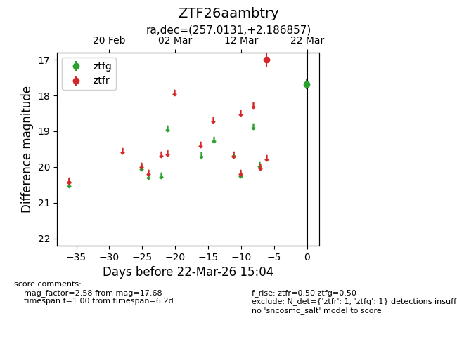
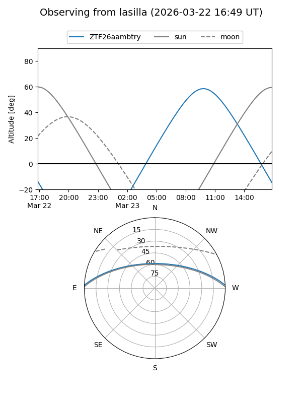
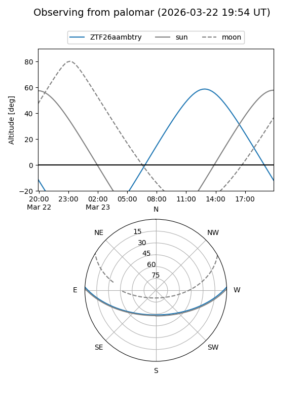

ZTF26aambtry
Target ZTF26aambtry at 2026-03-22 15:06
Aliases and brokers:
FINK: link
Lasair: link
ALeRCE: link
alt names
ZTF26aambtry (ztf,fink_ztf)
Coordinates:
equatorial (ra, dec) = 257.0131,+2.18686
equatorial (HMS+DMS) = 17:08:03.14,+02:11:12.69
galactic (l, b) = (22.5547,+23.89842)
Flags:
Photometry:
last ztfg=17.68, ztfr=17.00
1 ztfg, 1 ztfr detections
Lightcurve

Visibility


Additional plots